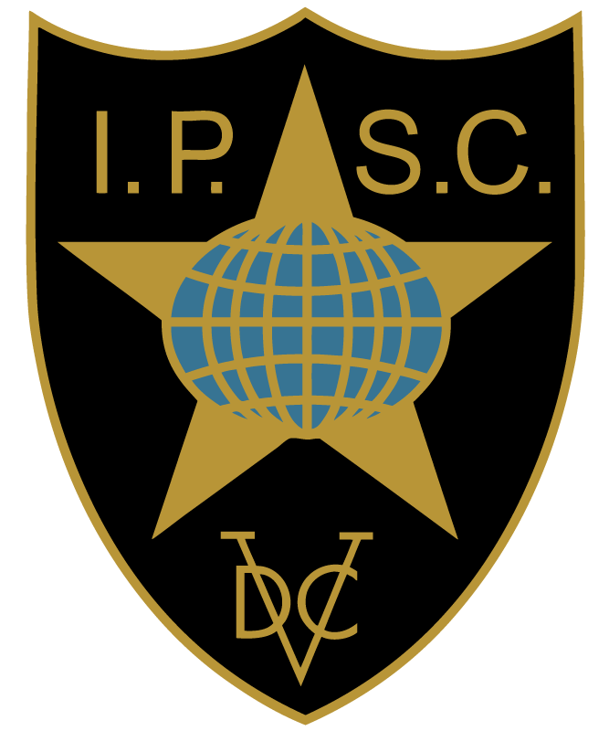

D
Diligentia
정확성
모든 표적에는 득점 구역이 있습니다. 빠르기만 해서는 이길 수 없습니다. A존을 맞히는 정밀함이 점수의 출발점입니다.
IPSC 공식 지역 협회 · 대한민국
Diligentia · Vis · Celeritas
KRPSA는 국제실용사격연맹(IPSC)이 공인한 대한민국의 실용사격 협회입니다.
International Practical Shooting Confederation
세계에서 가장 크고 오래된 실용사격 단체. 움직이며, 판단하며, 쏜다.
국제실용사격연맹(IPSC)은 1976년 5월 미국 미주리주 컬럼비아에서 창립되었으며, 네덜란드 암스테르담에 본부를 두고 있습니다. 아프리카·아메리카·아시아·유럽·중동·오세아니아에 걸쳐 108개 이상의 지역(Region)이 가입한 세계 최대의 사격 스포츠 단체입니다.
실용사격(Practical Shooting)은 정해진 자세에서 정지 표적을 쏘는 전통 사격과 달리, 선수가 코스를 이동하면서 다양한 거리·각도·배치의 표적을 스스로 판단하여 제압하는 역동적인 종목입니다. 모든 코스는 정확성·파워·속도가 균형을 이루도록 설계됩니다.
IPSC는 국가별로 단 하나의 회원 단체만을 인정합니다. 대한민국에서는 KRPSA가 그 역할을 맡아 공인 교육, 자격 인증, 공식 매치 개최와 국가대표 파견을 담당합니다.
ipsc.org에서 더 알아보기
정확성
모든 표적에는 득점 구역이 있습니다. 빠르기만 해서는 이길 수 없습니다. A존을 맞히는 정밀함이 점수의 출발점입니다.
파워
탄약의 위력은 파워 팩터로 측정되며, 최소 기준을 충족해야 합니다. 강한 탄을 다루는 통제력이 곧 실력입니다.
속도
타이머는 첫 발부터 마지막 발까지를 기록합니다. 점수를 시간으로 나눈 히트 팩터(Hit Factor)가 순위를 가릅니다.
IPSC의 컴스탁(Comstock) 채점 방식. 사격 발수와 시간에 제한이 없는 대신, 초당 획득 점수로 경쟁합니다.
Disciplines
핸드건에서 액션에어까지, 모든 종목은 동일한 IPSC 철학 위에 서 있습니다.
01 · 핵심 종목
IPSC의 출발점이자 가장 오래되고 가장 큰 종목입니다. 오픈부터 리볼버까지 7개 디비전이 있어 양산형 권총부터 경기용 커스텀 건까지 같은 코스에서 경쟁하며, KRPSA가 여는 매치의 절대다수를 차지합니다. 3년마다 열리는 핸드건 월드 슛(Handgun World Shoot)이 이 종목의 정점입니다.
02 · 핵심 종목
에어소프트 핸드건으로 IPSC 규칙을 그대로 적용하는 종목입니다. 실탄과 같은 코스, 같은 움직임, 같은 안전 절차를 따르면서도 진입 장벽은 훨씬 낮아, 대한민국에서 실용사격을 시작하는 가장 가까운 문입니다. KRPSA 신규 회원 대부분이 액션에어로 첫 매치를 경험합니다.
권총탄을 쓰는 카빈(Pistol Caliber Carbine)으로, 핸드건과 같은 코스를 소총의 안정성과 빠른 팔로업 샷으로 소화합니다. 진입 장벽이 낮아 빠르게 성장하는 종목으로, KRPSA도 정기적으로 매치를 편성합니다.
버드샷·벅샷·슬러그를 하나의 코스 안에서 전환하며 쏩니다. 탄종 교체와 재장전이 곧 실력이 되는 종목으로, 다른 종목과는 완전히 다른 운영 리듬을 요구합니다.
이 외에도 KRPSA는 아래 종목을 함께 다룹니다.
격투기의 체급처럼, 총기의 종류와 개조 범위에 따라 나뉩니다.
컴펜세이터, 전자조준기, 확장 매거진까지 사실상 제한이 없는 최상위 장비 부문입니다. Major 파워팩터 160, Minor 125.
총기 종류에는 제한이 없고, 슬라이드 후방에 전자조준기 하나만 장착합니다. 그 외 개조는 자유롭게 허용됩니다.
225×150×45mm 박스 규격 안에 들어가야 하며, 가늠자·가늠쇠만 사용합니다. 컴펜세이터와 전자조준기는 금지됩니다.
IPSC 승인 양산형 권총에 슬라이드 가공으로 장착한 도트사이트 하나만 허용됩니다. 매거진은 15발 이하이며 그 외 개조는 금지됩니다.
IPSC 승인 양산형 권총을 거의 원형 그대로 사용합니다. 조준경 없이 가늠자·가늠쇠만 쓰며, 매거진은 15발 이하입니다.
1911 계열 싱글스택 권총 전용. 같은 박스 규격 안에서 매거진은 8발(메이저)·10발(마이너)로 제한되며, 조준경은 금지됩니다.
실린더 방식 리볼버 전용. 7발 이상 실린더는 Major로 인정되지 않아 사실상 6발 기준으로 겨루며, 조준경은 금지됩니다.
Korea Practical Shooting Association
대한민국의 실용사격을 대표하는 단 하나의 이름.
KRPSA(Korea Practical Shooting Association, 대한실용사격협회)는 IPSC 헌장에 따라 대한민국을 대표하는 IPSC 지역 협회(Region)입니다. 대한민국은 2018년 IPSC 제42차 총회에서 106번째 회원 지역으로 가입했으며, 2024년 11월 아르헨티나 코르도바에서 열린 제48차 IPSC 총회에서 새로운 대한민국 지역 이사회(Regional Directorate)가 승인되어 KRPSA가 공식 지역 협회로 활동하고 있습니다.
KRPSA는 IPSC 규정에 따른 안전 교육과 자격 인증, 국내 공식 매치 운영, 국제 대회 국가대표 선발·파견을 담당하며, 대한민국 실용사격이 국제 기준 위에서 성장하도록 이끕니다.
액션에어로 첫 발을 떼는 신규 회원부터 핸드건 월드 슛에 도전하는 국가대표까지, KRPSA는 대한민국 실용사격의 모든 단계를 함께합니다.
Get Started
IPSC 공식 매치에 서기까지, 세 단계면 충분합니다.
에어소프트 핸드건으로 IPSC 규칙, 안전한 총기 취급, 사격 기본기와 매치 운영을 배웁니다. 수료 시 IPSC 공식 액션에어 매치 출전 자격이 주어집니다.
실탄 자격 교육을 준비하는 분을 위한 필수 안전 과정. 격렬한 이동을 동반하는 실탄 사격의 특성상 사전 안전 교육과 검토를 거칩니다.
공인 사격장에서 실제 매치 형식으로 이동·사격·문제 해결을 익힙니다. 수료 시 IPSC 공식 실탄 매치 출전 자격이 주어집니다.
Leadership & Contact
IPSC 지역 이사 (Regional Director)
Won-Taek Lim · RD, IPSC Korea Region
지역 이사는 IPSC 헌장에 따라 대한민국 지역을 대표하며, IPSC 총회에서 대한민국의 투표권을 행사하고 국내 IPSC 활동 전반을 총괄합니다.
kor@ipsc.org